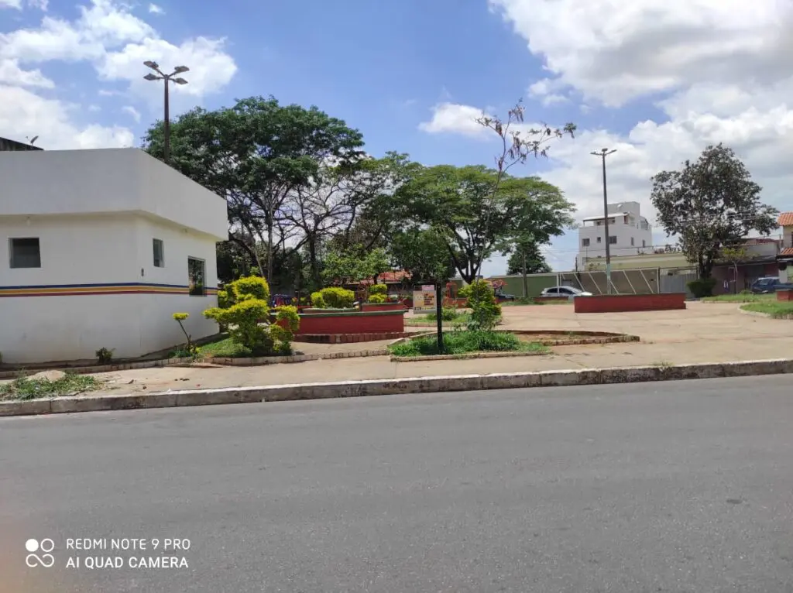

A Praça Alfredo Alves Martins, conhecida como Praça do Letícia, no bairro de mesmo nome, em BH, se tornou o “point de Venda Nova” neste ano. O bem público, porém, segundo moradores, ainda precisa de melhorias, sobretudo diante do incômodo trazido por encontros de jovens aos fins de semana, o que gera lixo, incômodo aos moradores e até consumo de drogas no local.“A gente como morador não se incomoda das pessoas consumirem e se divertirem na praça. Até porque, o comércio é intenso aqui. Porém, a situação que a gente vem passando aqui é de muito incômodo para os moradores: aglomeração em plena pandemia, uso de drogas e som alto sem controle de horário. Isso vem trazendo tristeza para o nosso bairro”, afirma Fernando Lara, conhecido como China, proprietário de um imóvel localizado nos arredores da praça.Também moradora das redondezas da Praça do Letícia, Vanessa diz que a reabertura do comércio aumentou ainda mais as ocorrências policiais. “Teve um fim de semana que mais de mil pessoas reuniram na praça. Houve comércio de drogas, sexo em via pública e muita aglomeração”, afirma.
De acordo com os moradores, a praça tem um comércio intenso e era usada por famílias, sobretudo aos fins de semana, como local de passeio. Mas, com o aumento do tráfico de drogas no local, os moradores têm evitado frequentar o local, o que também prejudica os estabelecimentos ao redor.
Posto policial na Praça do Letícia

Diante dos problemas, os moradores se organizam para criar uma associação para discutir os problemas que circundam o Letícia. De acordo com Fernando Lara, o China, já houve reuniões com a Polícia Militar para reinstalar na praça um posto de segurança.
Segundo ele, a estrutura já está montada há anos, mas está desativada. Há problemas de infraestrutura, como falta de computadores, bebedouros e problemas no banheiro, o que impossibilita a presença dos militares.
Ainda assim, China afirma que a PM ouve as demandas dos moradores. Segundo ele, houve uma reunião da comunidade com o comando da polícia para tratar sobre os problemas da praça.
“Falamos que era importante eles chegarem antes dos eventos, não durante. Porque depois que a aglomeração acontece, não tem jeito de coibir. Daí, o tráfico começa. A situação já melhorou bastante nas últimas semanas”, explica.
Procurada, a PM informou à reportagem que “o Bairro Letícia, conta com equipe de policiamento motorizado específico para as áreas comerciais de maior movimentação, nas ruas adjacentes aos centros comerciais”.
Segundo a corporação, uma viatura, duas motocicletas e patrulha a partir das 15h compõem a operação diária no Letícia. O objetivo é orientar os moradores e comerciantes e prestar apoio em caso de ocorrências de destaque.
Números de ocorrências
Conforme números da PM, o bairro registra queda de 17,65% no número de furtos neste ano em relação a 2019, no período compreendido entre janeiro e 10 de novembro. Quanto à quantidade de roubos, a diminuição é de 50,62% no mesmo período.
Quanto à praça, a PM informa que realizou 89 operações no local só neste ano. Esses trabalhos tiveram apoio da Prefeitura de BH, por meio da Guarda Municipal e da equipe de fiscalização.
A reportagem também procurou a Guarda Municipal para obter posicionamento. Em nota, o órgão ligado à prefeitura informou que tem se reunido com a Polícia Militar e a população do Bairro Letícia, em Venda Nova, “para discutir medidas voltadas para a garantia da segurança na praça e no seu entorno”.
Segundo a Guarda Municipal, agentes atuam na praça para garantir o “uso obrigatório de máscaras”, por meio de “patrulhas preventivas e de abordagens educativas à população por toda a cidade”. As rondas são realizadas a pé e também em viaturas.
moradores reclama de lixo na praça do "leticia"
O lixo é outro problema causado pelos eventos frequentes de jovens na Praça do Letícia. Segundo os moradores, garrafas de vidro e de plástico e copos descartáveis são principais itens que deixam o local com aspecto de abandono após os bailes.
“Teve vez que a gente mesmo se organizou para limpar a praça, porque a SLU (Superintendência de Limpeza Urbana, da Prefeitura de Belo Horizonte) não passa com frequência”, relata Vanessa, que tem uma casa localizada exatamente na praça.
Procurada, a SLU informou que “o local era limpo quinzenalmente. Porém, com o aumento da demanda, a frequência da limpeza passou a ser semanal, todas as segundas-feiras”.
A SLU também esclareceu que “conta com o apoio da população para manter a cidade limpa”.